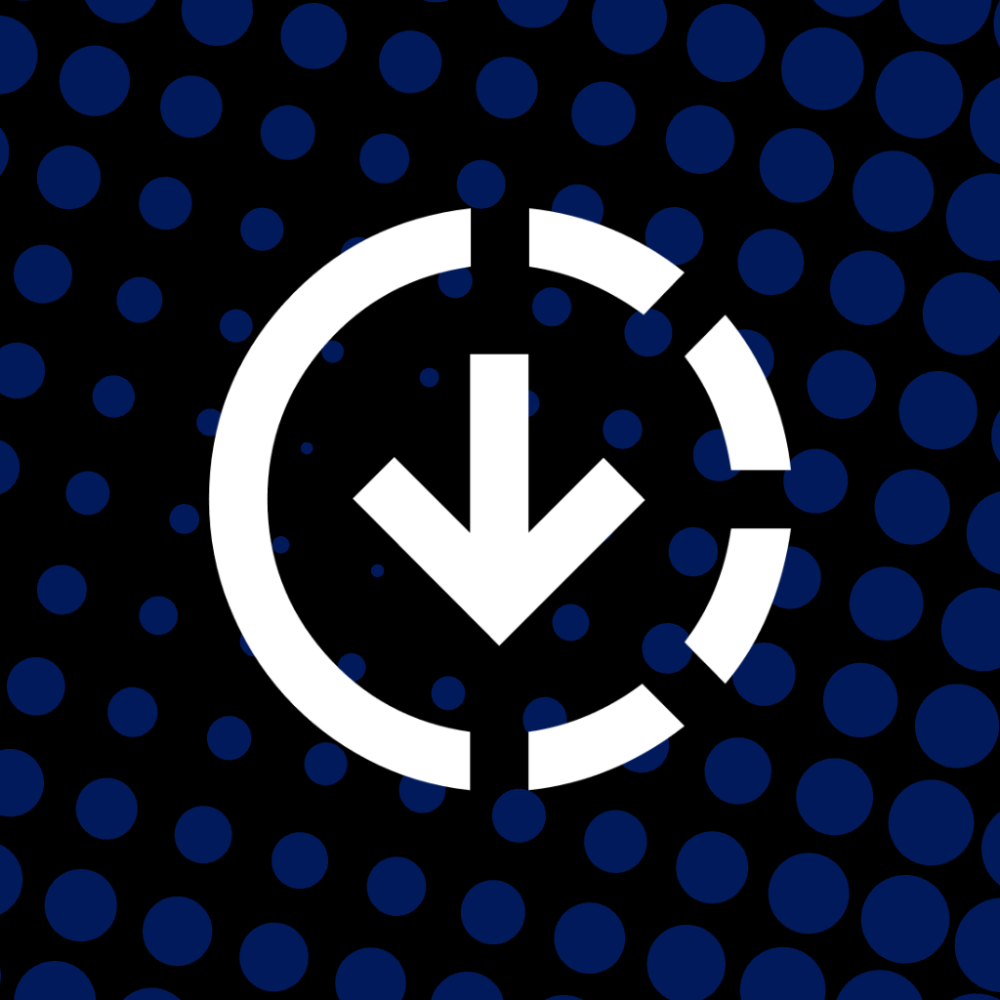

On-device sideloader. Follow the three steps below to get set up.
SideInstaller is not affiliated anyhow with SideStore. Please do not ask questions to the SideStore staff about SideInstaller as they are not able to answer. Instead, if you have issues or suggestions, write them in the SideInstaller Discord.
Settings and tap Profile Downloaded (or go to Settings → General → VPN & Device Management), then tap Install.Settings → General → VPN & Device Management, open DNS and make sure SideInstaller is selected. Keep it enabled until setup is complete.Pick an app and tap Sign, then choose a certificate — signing is automatic.
Settings → General → VPN & Device Management, tap the developer profile, and Trust it.You're all set.
That's it. Open SideInstaller from your Home Screen and use it to install SideStore (or SideStore + LiveContainer), straight from your device. No PC needed.
Settings → General → VPN & Device Management → SideInstaller → Remove Profile — or keep it and just stop using its DNS by switching DNS back to Automatic in the same menu.
Sign:
Certificate: